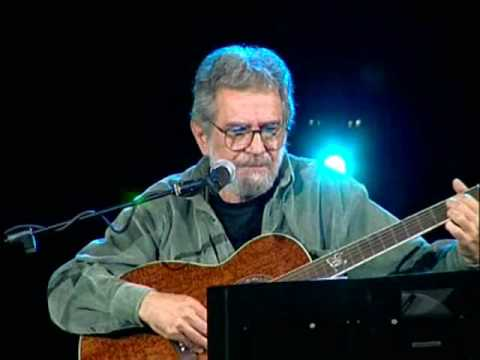

Արթուր Մեսչյան
«Նրա երգը ներաճել, միացել է սերունդների երթին»
Հրաչ Թամրազյան
 «Առաքյալներ» կոչվող լեգենդը ծնվել է 1960-ականների վերջին, Արթուր Մեսչյանի նախաձեռնությամբ: Երևանի պոլիտեխնիկական համալսարանի երեք ուսանողների` Արթուր Մեսչյանի, Լևոն Մելիքյանի և Գրիգոր Նալբանդյանի երգերը միանգամից դարձան մի ամբողջ սերնդի ձայնը: Միախառնելով հայ հոգևոր երաժշտությունը այն տարիներին իր վերելքն ապրող ռոքի հետ, խումբը պարզապես անմոռաց տպավորություն էր թողնում ունկընդրողի վրա: Այդ հաջողությանը չէր կարող խանգարել նույնիսկ սովետական ցենզուրան, և 1970-ականներին տասնյակ հազարավոր հայեր լսում էին եռյակի ձայնագրությունները ժապավենների վրա: «Առաքյալների» հաջողությունն էլ ավելի ամրապնդվեց The Insane Asylum ներկայացումը, որը պատմության մեջ մտավ, որպես առաջին հայկական ռոք-օպերա: Ներկայացմանը հետևեցին խմբի հյուրախաղերը խորհրդային հանրապետությունների համալսարաններում:
1974-ին Ամենայն հայոց կաթողիկոս Վազգեն Ա-ն առաջարկեց Մեսչյանին ռեքվիեմ գրել, նվիրված Մեծ Եղեռնի զոհերի հիշատակին, միախառնելով ռոք-խմբի և Հայաստանի կամերային նվագախմբի երաժշտությունը: Տեքստային նյութի որոնման ընթացքում Մեսչյանը հանդիպեց Եղեռնը վերապրած հայտնի արևմտահայ պոետ Մուշեղ Իշխանի «Տապանաքար» ժողովածուն, որն էլ ի վերջո դարձավ ռեքվիեմի հիմքը: Մեկ տարի անց 1975-ին «Ռեքվիեմը» կատարվեց Էջմիածնում և ստացավ Վեհափառի օրհնությունը: Չնայած ալբոմն այդպես էլ լույս չտեսավ, Իշխանի բանաստեղծությունների հիման վրա գրված երգերը հետագայում տեղ գտան Մեսչյանի մյուս ալբոմներում:
1978-ին Մեսչյանին հաջողվեց առաջին անգամ ելույթ ունենալ ազգային հեռուստատեսության 2րդ ալիքով, շրջանցելով բոլոր խոչընդոտները: Նրա երգերը հնչեցին քաղաքական ենթատեքստ ունեցող «Մարդակեր» հեռուստաներկայացման ընթացքում:
Հաջորդ տասնամյակի սկզբին «Առաքյալենրն» անհայտացան երաժշտական բեմից, իսկ 1984-ին Արթուր Մեսչյանը սկսեց իր առանձին ուղղին: Նոր խմբում նա ընդգրկեց իր երկու աշակերտներին` Վահան Արծրունուն և Գուրգեն Մելիքյանին:
«Առաքյալների» հավատարիմ երկրպագուները կրկին Մեսչյանի կողքին էին, նրա լսարանը աճում էր չնայած նրան, որ համերգները փաստացի արգելված էին:
Նույն 1981 թվականին Մեսչյանն առաջին անգամ համաձայնվեց ուժերը փորձելու կինոյում: Պոետ Միքայել Նալբանդյանի մասին ֆիլմում Մեսչյանին ոչ միայն տվեց գլխավոր դերը, այլև ազատություն կինոնկարի երաժշտական ձևավորման հարցում: Այս վերջին հանգամանքը առավել քան գրավիչ էր, և նախկին «առաքյալը» հնարավորություն ստացավ վերջապես առաջին (և վերջին) անգամ Սովետական Հայաստանում պրոֆեսիոնալ ձայնագրություն կատարել: Ֆիլմում տեղ գտան Մեսչյանի երեք ստեղծագործություն` երկու գործիքային և «Երկիր հնամյա» երգը: 1989-ին լույս տեսավ Մեսչյանի մասնակցությամբ երկրորդ ֆիլմը` «Եվ կրկնվի ամենը» կինոնկարը:
Միևնույն ժամանակ Մեսչյանը, որը մինչ օրս նշում է այն, որ նա ոչ թե երաժիշտ է, այլ` ճարտարապետ, շարունակում էր աշխատել իր հիմնական մասնագիտությամբ Հայարդնախագծում: Այդ տարիներին Մեսչյանը նախագծեց Երևանի «Զվարթնոց» միջազգային օդանավակայանը, Կառավարության ընդունելությունների տունը և Մատենադարանի նոր թևը, որի շինարարությունը երկար ընդմիջումից հետո վերսկսվեց 2007-ին: Սակայն 1980-ականների վերջին երկրում դժվար ժանակ է սկսվում, 1988-ին սկսվում է Ղարաբաղյան շարժումը: Մեսչյանը, ինչպես ամբողջ հայ ժողովուրդը և մտավորականությունը, իր ձայնն է բարձրացնում Արցախում տիրող իրավիճակի դեմ: Միևնույն ժամանակ արդեն այդ ժամանակ, նա հասկացավ, որ շարժման ղեկավարները այն մարդիկ չեն, ովքեր իսկապես մտածում են ժողովրդի մասին: Որպես արդյունք` Սովետական միության փլուզումից հետո Հայաստանն ընկղմվեց խավարի, ցրտի և անօրինության մեջ…
1989-ին, ԽՍՀՄ փլուզումից երկու տարի առաջ, Մեսչյանը կնոջ և երկու որդիների հետ տեղափոխվեց ԱՄՆ, որտեղ էլ վերջապես կարողացավ ձայնագրել երկու տասնամյակի ընթացքում կուտակված նյութերը, միաժամանակ աշխատելով որպես ճարտարապետ: 1990 թվականին ծնվեց իր առաջին` «Catharsis» սկավառակը, որին երկու տարի անց հաջորդեց «Ցնորված ջութակահարի մենախոսությունը», ապա «Cahtarsis II»-ը, «Wander»-ը և «Հաղորդությունը», որոնք միանգամից մեծ ճանաչում ստացան թե սփյուռքում, թե Հայաստանում:
Արթուր Մեսչյանի` իրադարձություններով հարուստ կյանքում նոր էջ բացվեց 2005 թվականին, երբ նա` 17 տարի Միացյալ Նահանգներում ապրելուց և աշխատելուց հետո կնոջ հետ միասին վերադարձավ հայրենիք: Վերադարձին հաջորդած համերգների շարքը իսկական նվեր էր Մեսչյանի արվեստի բազմաթիվ սիրահարների համար, ում բախտ վիճակվեց տեսնել նրան բեմում երկար տարիների ընդմիջումից հետո: Այս ելույթների տրամաբանական շարունակությունը դարձան երկու համերգային սկավառակները: Այնուամենայնիվ, չնայած դրանց մեծ հաջողությանը, Մեսչյանն առայժմ չի շտապում հանդես գալ նոր երգերով կամ համերգային ծրարգրերով նախընտրելով զբաղվել ճարտարապետությամբ: